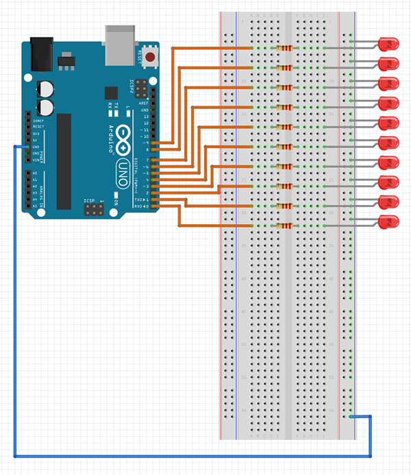

The Knight Rider is one the perfect Arduino project for beginners. What is Knight Rider? It’s a set of LEDs that blinks one after another, Here is what the official Arduino page says:
We have named this example in memory to a TV-series from the 80’s where the famous David Hasselhoff had an AI machine driving his Pontiac. The car had been augmented with plenty of LEDs in all possible sizes performing flashy effects.
So, we will make a blinking set of LEDs. You can find the code to make the Knight Rider on the Arduino page. Here we will attempt to show a simpler and shorter code. I will do a 10 LEDs version of it. Let’s start with what we will need for this project, if you bought one of those Arduino starter Kits, you should find each of these components in the box:
- Arduino Uno Board
- 10 x LEDs
- 10 x 200Ω resistors or 220Ω resistors
- Breadboard
This project will particularly help you learn to use LEDs with Arduino and how to use for loops. The first thing we have to do is connect everything together, below is a schematic with all the connections. I used 220Ω resistors but 200Ω resistors can work for this project as well. Some people say you don’t need to use resistor when connecting LED to Arduino, but that is not true. You always have to use resistor when connecting LED to Arduino otherwise you can damage your Arduino and LED. So remember this: Whenever there is an LED, there must be a resistor.
Put the negative leg (shorter one) of the LED in the negative bar of the breadboard and the positive leg in the breadboard row. then connect the resistor to the LED and the resistor with the Arduino using a male-male jumper wire. Do the same for all 10 LEDs. Don’t forget about Connecting the negative bar to GND of the Arduino.
Now we can upload a program.
Just keep in mind that when you want to upload the program, you have to disconnect jumper wires from pins 0 and 1 because they are shared with the UART communication pins RX and TX. It is impossible to upload a program on the board when LEDs are plugged into these pins.
Code:
//here you can change speed of the effect, it can be faster or slower, as you wish
int time_between_blinks = 50;
void setup() {
//here we are setting up all pins as an outputs for LEDs
pinMode(0, OUTPUT);
pinMode(1, OUTPUT);
pinMode(2, OUTPUT);
pinMode(3, OUTPUT);
pinMode(4, OUTPUT);
pinMode(5, OUTPUT);
pinMode(6, OUTPUT);
pinMode(7, OUTPUT);
pinMode(8, OUTPUT);
pinMode(9, OUTPUT);
}
void loop() {
//that's the for loop, the first parameter is a value that is equal to 0, the loop
//will work as long as the value of a will be higher or equal to 10 (second parameter)
//and at the end we are incrementing a by 1
int volume = analogRead(A0);
volume = map(volume, 0, 1023, 0, 10);
for(int a = 0; a <10; a++){ if(volume >= a){
digitalWrite(a, HIGH);
}else{
digitalWrite(a, LOW);
}
}
}
After uploading, you should see the Knight Rider come to life. You can change it’s speed at the beginning of the code by changing the time_between_blinks value. You can also try to add more LEDs or change the code to make it more yours. For example you can try to turn on 2 or 3 LEDs at once instead of just one.